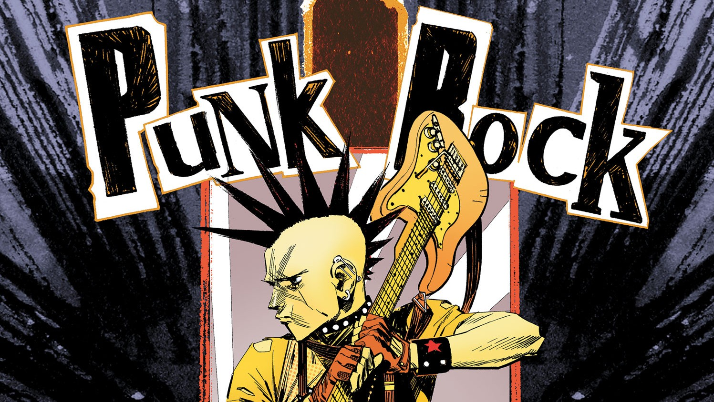

PUNK ROCK

Панк-рóк (англ. punk rock) — жанр рок-музыки, возникший в начале 1970-х годов в США и, чуть позже, в Великобритании.
Смыслом, который вкладывали ранние панк-рок-группы в свой жанр, было стремление играть, главенствующее над умением делать это; благодаря такому определению сформировалась разнородная ранняя американская панк-сцена в диапазоне от легковесных Ramones до сложных и экспериментальных Television. Подобный подход позволил панк-року стать основой целого ряда субкультур: панк, DIY, культуры фэнзинов, позже — straight edge. В 1976 г панк-рок начинает зарождаться в Великобритании, в более скандальной и политизированной форме; благодаря этому к 1977 году жанр становится одним из самых заметных явлений в рок-музыке Великобритании.
Со временем панк-рок породил множество разновидностей. Крупнейшими из них являются более мелодичный и легковесный поп-панк, агрессивные хардкор и Oi!, а также комбинации с другими жанрами — ска-панк и ставший отдельным крупным жанром постпанк.